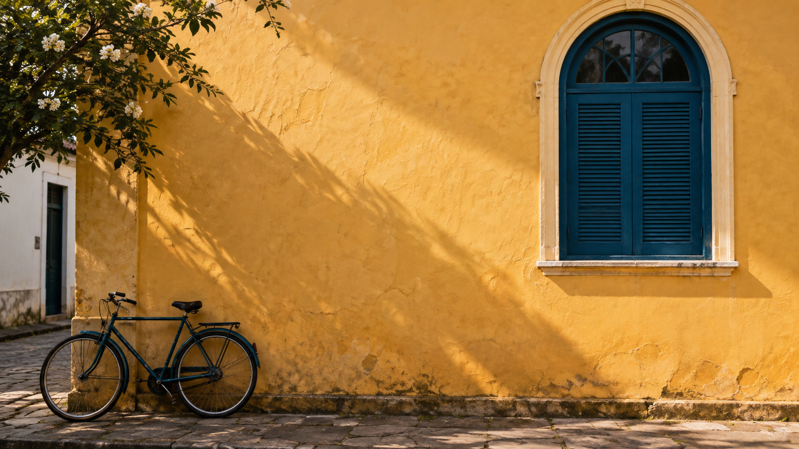

Kit Luz de Rua
Imagen fuente y plan para crear tus cuatro piezas.
guardar solo la imagen PNG · guardar el guion


Si el navegador abre la imagen, elige Guardar imagen como. Luego, en Figma, elige File → Place image o arrastra el archivo guardado al marco.
Guion de referencia
LUZ DE RUA — KIT DIDÁCTICO Caso ficticio, sin dirección, fecha ni inscripción reales. Imagen fuente: fachada.png, creada con la función nativa de imágenes de Codex. No representa un lugar ni recorrido documentado. Una página de Figma, cuatro marcos de 1080 por 1350. Margen inicial: 64. Espacio inicial entre textos: 24. Ajusta según la lectura. Título: Inter Bold, 64, interlineado 72. Subtítulo: Inter Regular, 32. Firma: Inter Regular, 28. Fondo claro #F7F1E6; azul petróleo #173B46; acento ocre #C58B35. El acento no está aprobado automáticamente para texto. Revisa cada combinación. 00-Capa: Luz de Rua Subtítulo: Aprende a observar la ciudad. 01-Luz: Mira la luz Subtítulo: Observa dónde termina la sombra y comienza la luz. 02-Detalhe: Elige un detalle Subtítulo: Acércate a una textura, forma o contraste. 03-Serie: Arma tu serie Subtítulo: Reúne tres registros con una decisión visual en común. Firma en las cuatro piezas: Ejemplo didáctico. Usa la misma imagen fuente con distintos recortes. Conserva el arco en la portada. Guarda versiones antes de probar efectos. Exporta cuatro PNG en 1x. Revisa cada PNG fuera del editor. Guarda también una copia .fig de tu archivo, la imagen fuente y una nota con la fecha y dirección del archivo en línea. Este kit no incluye un archivo .fig ni una serie terminada en Figma.